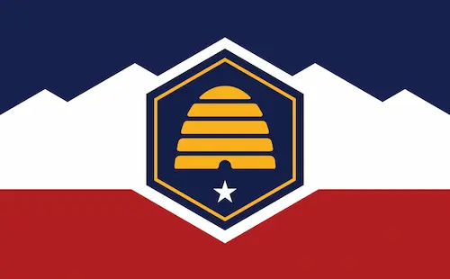

Merari M. Gonzalez
About Me
My name is Merari M. Gonzalez, I'm originally from Mexico, and i currently reside in Utah E.U. I'm mom to 3 boys named Kingston, Santiago and Maddox. I work as a Barber at a hair salon, and I'm currently working on my Bachelors of Software Development. I like to learn new things, I love to read, my favorite authors are Paulo Coelho and Gregory Maguire.
Utah, EU

Utah is one of the four corners states, sharing a border with Arizona, Colorado, and New Mexico. Utah has been inhabited for thousands of years by various Indigenous peoples, such as the ancient Puebloans, the Navajo, and the Ute. People from Utah are known as Utahns.